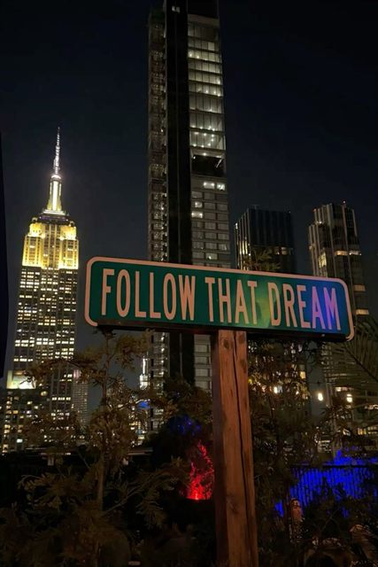
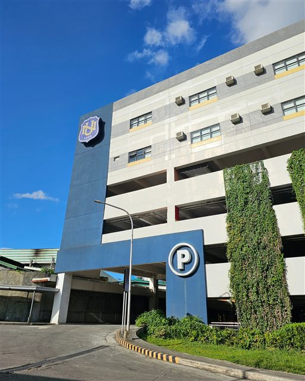
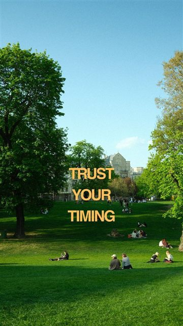
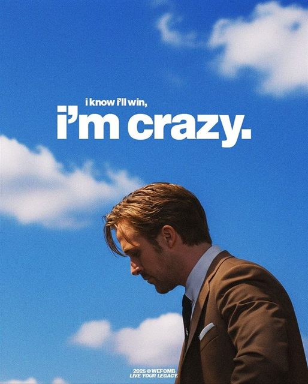
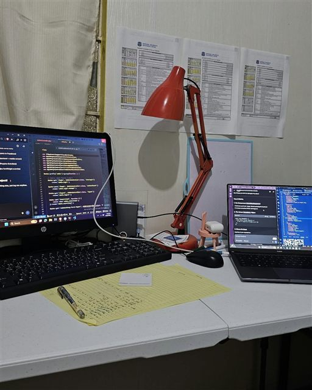
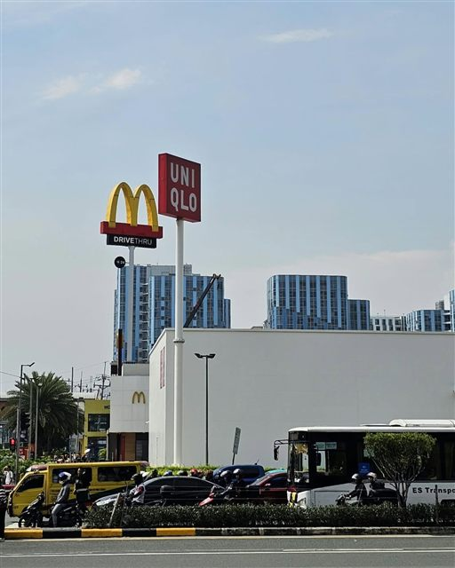

Creative Director
SACE Student Council · NU Lipa
Lead the Creatives Committee in digital media, event publicity, and publication materials.
 @johannescls
@johannescls
Full-stack development, interfaces, and digital products. Clean logic, thoughtful engineering — built on NYC frequency.

Follow that Dream Day 01
uni
Daily Reminder
motto
behind the scenes
the city Manila '26Through systems, stories, and a little creative instinct.
Here’s a glimpse of both sides of my work.
LumiNUs brings alumni information, identity, and community together across mobile and web.
Explore LumiNUs

Publication materials for the NU Lipa Marketing Office.

Anniversary artwork and student council stories.
 Hi, I'm Johannes!
Hi, I'm Johannes!
I build things that work — then make them mean something.
I am Johannes Emmanuel A. Claus, a BS Information Technology student at National University (NU) Lipa, specializing in Mobile & Web Applications. I have worked on full-stack development and UI/UX design principles through the Web Systems and mobile applications I have created throughout my IT journey at the university. I am also skilled in project management, as I led my group in completing our Capstone Project courses in previous terms. My tech side taught me how things work, and it helped me understand that backend processes are the most important of all; without proper processes, a system won’t work or will fail.
More than just an IT student, I tend to explore beyond my chosen career path and skills. I also served as a Graphic Design Artist with the NU Lipa Marketing Office for more than two years. I created various marketing and promotional materials for my university. I had a versatile role where I handled both printed and digital materials for every university marketing campaign. This experience opened doors to new opportunities, including my appointment as Creative Director of the NU Lipa School of Architecture, Computing and Engineering Student Council.
Places where I've learned to turn ideas into something people can see, use, and connect with.
SACE Student Council · NU Lipa
Lead the Creatives Committee in digital media, event publicity, and publication materials.

NU Lipa Marketing Office
Design print and digital materials with Photoshop and Canva, write campaign content, manage multiple deliverables since March 2025.

The Synergy · NU Lipa SACE
Led editorial and photo coverage for IT — event photography, layout production, and story organization.

YES-O · Alangilan Senior High School
Managed organizational communications and social media; supported financial transparency as Auditor.
Where I built my foundations.
BS Information Technology
Specialization in Mobile & Web Applications
STEM · Graduated With Honors
Work Immersion Awardee
The tools and skills I bring to my work.
PHP / Laravel / MySQL / JavaScript / React Native / C# / Java / HTML & CSS
Figma / Photoshop / Canva / Affinity / CapCut
GitHub / Windows Server / Networking / ClickUp / Notion / Google Workspace / Microsoft 365

Selected projects, interfaces, and the thinking that connects them.
Explore my Tech Portfolio ↗
Publication materials, visual identities, and small worlds made by hand.
View Creative Portfolio ↗
Find me online.
Follow along, see what I am building, or connect with me professionally.